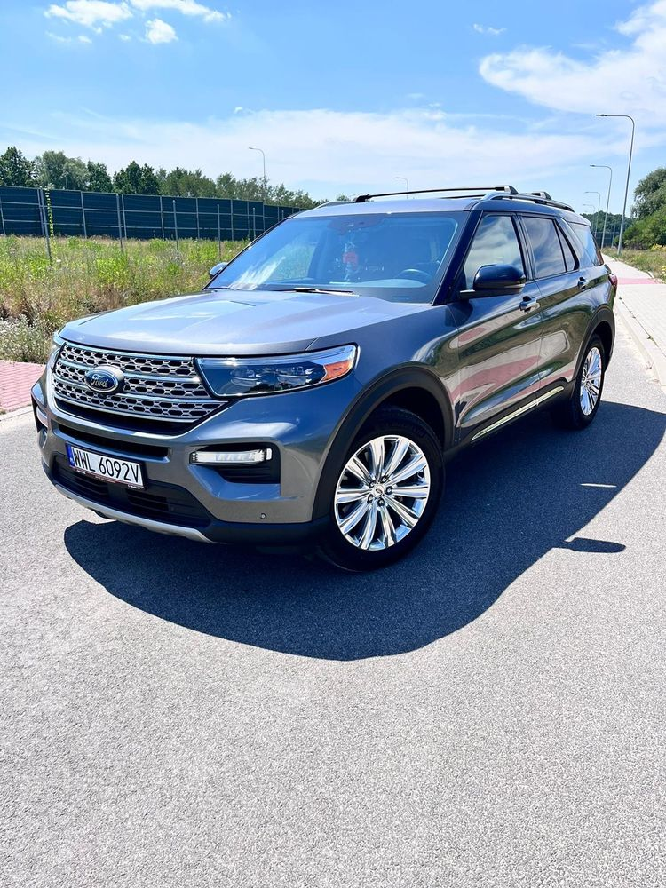
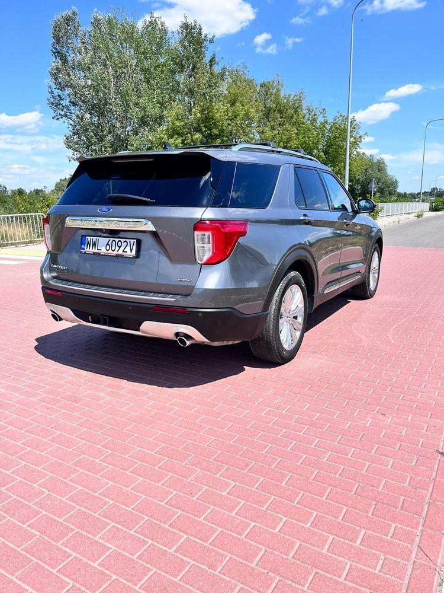
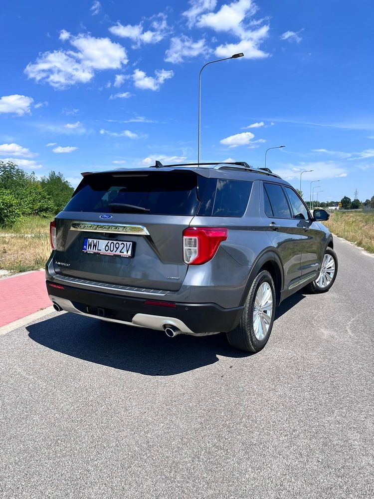
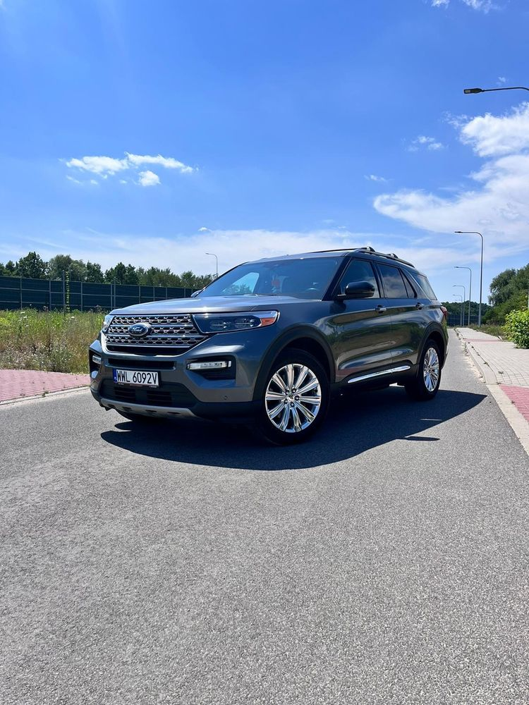

-zarejestrowany w kraju
-pierwsza rejestracja 2021
-rok produkcji 2021
-sprowadzony
-bardzo bogata wersja wyposażenia LIMITED
-duży panel/tablet dotykowy do obsługi nawigacji, komputera, radia, klimatyzacji
-rewelacyjny silnik 3,3 V6 321KM
-automatyczna skrzynia biegów
-duży panoramiczny szklany dach
-część przednia dachu otwierana elektrycznie
-klimatyzacja automatyczna 3-strefowa
-reflektory przednie Full Led
-światła LED do jazdy dziennej
-zmienne oświetlenie zegarów różna kolory
-różne tryby jazdy
-tapicerka skóra
-wentylowane fotele przód
-ogrzewane fotele przód
-ogrzewane fotele tył
-ogrzewana kierownica
-asystent utrzymania toru jazdy
-czujniki martwych pól
-radar
-esp
-abs
-6*airbag
-wspomaganie kierownicy
-elektryczne szyby przód
-elektryczne szyby tył
-elektryczne lusterka
-ogrzewane lusterka
-elektrycznie składane lusterka
-elektrycznie otw/zam klapa bagażnika
-elektryczny hamulec pomocniczy
-centralny zamek z pilota
-bez kluczykowe otw/zam samochodu
-bez kluczykowe uruchamianie silnika
-uruchamianie silnika z pilota
-immobilizer
-felgi aluminiowe 20 cali
-czujniki parkowania przód/tył
-kamera 360
-czujnik deszczu
-czujnik świateł
-komputer pokładowy
-tempomat
-tempomat adaptacyjny
-ogranicznik prędkości
-w pełni elektryczna regulacja fotela kierowcy wraz z pamięcią ustawień
-w pełni elektryczna regulacja fotela pasażera
-elektryczna regulacja kierownicy
-kierownica wielofunkcyjna
-pokryta skórą kierownica
-tylna fotele składane
-elektrycznie składane fotele w trzecim rzędzie
-podłokietniki
-wysokiej klasy nagłośnienie Bang&Olufsen
-radio-mp3 fabryczne ze sterowaniem przy kierownicy
-ładowarka bezprzewodowa telefonu/tabletu
-bluetooth
-AndroidAuto
-AppleCarPlay
-wyjście USB
-pakiet chrom
-relingi dachowe
-roletki szyb w drzwiach tylnych
-tylne szyby przyciemniane
-obrotomierz
-komplet kluczyków
-stan techniczny i wizualny bardzo dobry +
-bardzo bogate wyposażenie
-rewelacyjny silnik
-atrakcyjny wygląd
-czujnik otwierania bagażnika za pomoca ruchu stopy
-wymienione oleje/filtry
-posiada hak
Dodatkowe informacje: wersja wyposażenia: Limited, wersja silnika: V6 321KM, liczba poduszek powietrznych: 6, liczba miejsc: 6, przegląd ważny do: 2025-12-06, tapicerka: skora, tapicerka kolor: szary.
Auto 100% sprawne, bez konieczności dodatkowego wkładu własnego.
